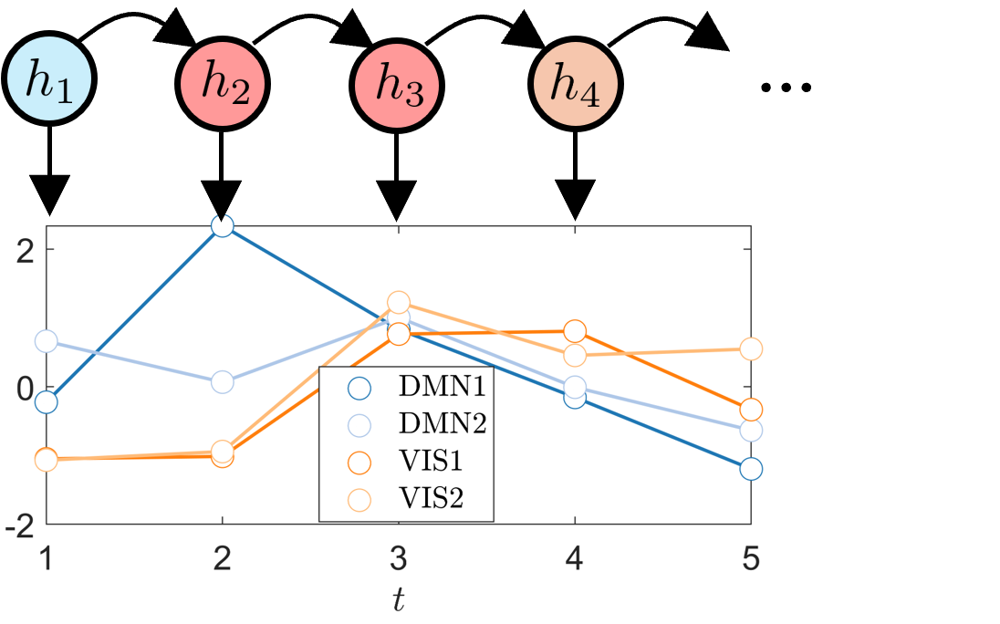

Hidden Markov Models for fMRI Brain Dynamics
2024–Present

This project applies Hidden Markov Models (HMMs) to fMRI for studying time-varying brain activity and functional connectivity. HMMs provide a probabilistic framework for identifying recurring brain states and characterizing how the brain transitions between different patterns of activity over time.
Our work uses HMM-based analysis across resting-state and task fMRI to investigate brain dynamics and their relationships with neurological and cognitive processes.